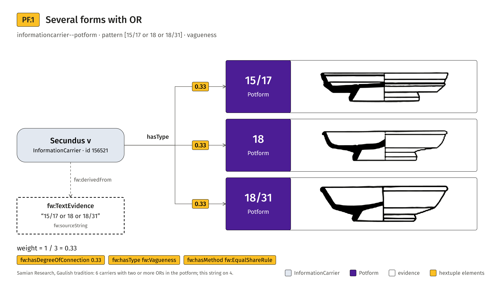
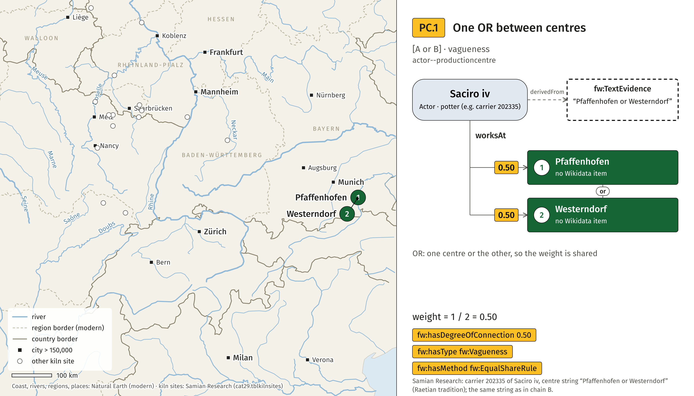
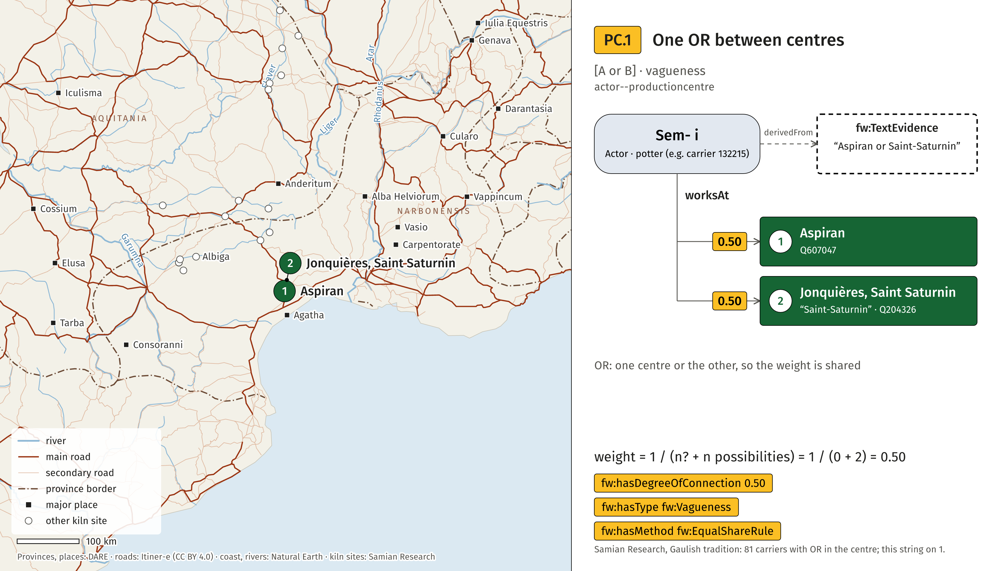

samian-amt visuals
Figures for the vagueness and uncertainty cases of the Potform and ProductionCentre relations, with examples from the Samian Research database, and for the model.

4×Potform
informationcarrier--potform: vagueness (OR), uncertainty (?), fuzziness-wobbliness, and observed frequency. Drawings are the profile forms of the Samian Research website, redrawn.

actor--productioncentre and informationcarrier--productioncentre on a modern basemap (coast, rivers, regions, borders, cities: Natural Earth).

The same cases on a Roman basemap: provinces and places (DARE), roads (Itiner-e, CC BY 4.0), Latin river names.

Chain AVitalis viii
Uncertainty, vagueness.

Chain BOnnio-
Uncertainty, vagueness.

Chain CVe- i
Fuzzy / wobbly, vagueness.

The samian-amt model in the same style: simple view, full semantics, toy reasoning, both directions, three chains (also one by one).